| 非洲 |
| 非洲 |
|
| 非洲之角国家 |
|
原页面：Releasable countries/Africa
This is a list of all releasable countries located in Africa outside of Ethiopia. Most of these countries are also released at game start if the "Africa Decolonized" Custom Game Rule is enabled.
| 国家 | Tag | 首都 | 意识形态 | 核心位于 | 备注 | 非洲去殖民化 |
|---|---|---|---|---|---|---|
| ALG | Algiers | |||||
| ANG | Luanda | |||||
| BAR | Mongu | Shares its core with |
||||
| BIA | Enugu | Shares its core with Starts as |
||||
| BOT | Gaborone | Requires Is released as a |
||||
| BRD | Bujumbura | With |
||||
| CBV | Praia | |||||
| CMR | Yaoundé | |||||
| CAR | Bangui | |||||
| CHA | N'Djamena | |||||
| RCG | Brazzaville | |||||
| COG | Léopoldville | With |
||||
| IVO | Abidjan | Also known as Ivory Coast | ||||
| DAH | Porto Novo | Also known as Benin | ||||
| DJI | 吉布提 | Shares its core with |
||||
| EGY | 开罗 | Requires Is released as a |
||||
| EQG | Malabo | Cannot be released by |
||||
| ERI | Asmara | |||||
| GAB | Libreville | |||||
| GHA | Accra | Requires Is released as a Starts as |
||||
| GNA | Conakry | |||||
| GNB | Bissau | |||||
| AOI | Addis Abeba | N/A | Can only be released by |
|||
| KAT | Élisabethville | With Shares its core with |
||||
| KEN | 内罗毕 | Requires Is released as a |
||||
| LBA | Tripoli | |||||
| MAD | Antananarivo | |||||
| MLW | Lilongwe | Requires Is released as a |
||||
| MLI | Bamako | |||||
| MRT | Nouakchott | |||||
| MOR | 卡萨布兰卡 | Cannot be released by |
||||
| MZB | Lourenco Marques | |||||
| NMB | Windhoek | |||||
| NGR | Niamey | |||||
| NGA | Lagos | Requires Is released as a |
||||
| RWA | Kigali | With |
||||
| WES | Laayoune | Cannot be released by Also known as Western Sahara. |
||||
| SEN | Dakar | |||||
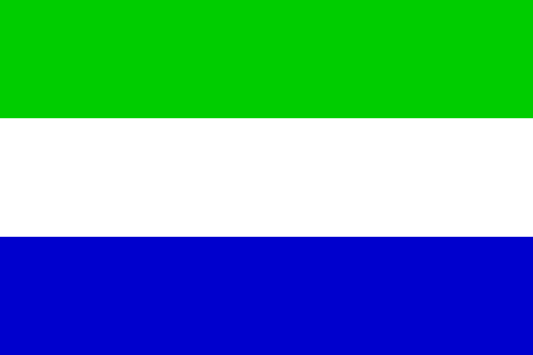 塞拉利昂 |
SIE | Freetown | Requires Is released as a |
|||
| SOK | Sokoto | Shares its cores with |
||||
| SOM | Mogadiscio | |||||
| SUD | Khartoum | Requires Is released as a |
||||
| TZN | Dar es Salaam | Requires Is released as a |
||||
| GAM | Banjul | Requires Is released as a |
||||
| RIF | Ceuta | Cannot be released by Shares its core with |
||||
| TOG | Lomé | |||||
| TUN | Tunis | |||||
| UGA | Kampala | Requires Is released as a |
||||
| VOL | Ouagadougou | Also known as Burkina Faso | ||||
| ZAM | Lusaka | Requires Is released as a |
||||
| ZIM | Harare | Requires Is released as a |
 阿尔及利亚 以中立主义
阿尔及利亚 以中立主义 开局，不举行选举。
开局，不举行选举。
| 政党 | 意识形态 | 支持率 | 党派领袖 | 国家名称 | 是否执政？ |
|---|---|---|---|---|---|
| 民主主义 | 25% | 通用 | Republic of Algeria | No | |
| 共产主义 | 5% | 通用 | Commune of Algeria | No | |
| 法西斯主义 | 20% | 通用 | Algerian Caliphate | No | |
| 中立主义 | 50% | Ahmed Ben Bella | 阿尔及利亚 | 是 |
| 意识形态 | 肖像 | 名称 | 党派 | 特质 | 效果 | 可用 |
|---|---|---|---|---|---|---|
Despotism |
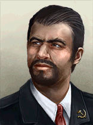 |
Ahmed Ben Bella | 中立主义 | – | – | 起始领袖 |
 阿尔及利亚 can form
阿尔及利亚 can form  安达卢斯,
安达卢斯,
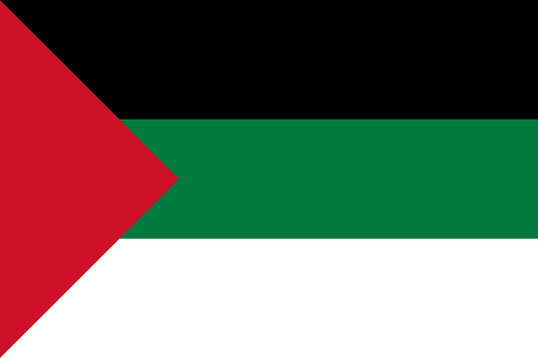
Arabia和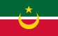
Maghreb 安哥拉 以中立主义
安哥拉 以中立主义 开局，不举行选举。
开局，不举行选举。
| 政党 | 意识形态 | 支持率 | 党派领袖 | 国家名称 | 是否执政？ |
|---|---|---|---|---|---|
| 民主主义 | 0% | 通用 | Republic of Angola | No | |
| 共产主义 | 0% | 通用 | Democratic People's Republic of Angola | No | |
| 法西斯主义 | 0% | 通用 | Angolan Empire | No | |
| 中立主义 | 100% | Jonas Lote | 安哥拉 | 是 |
| 意识形态 | 肖像 | 名称 | 党派 | 特质 | 效果 | 可用 |
|---|---|---|---|---|---|---|
中间主义 |
Jonas Lote | 中立主义 | – | – | 起始领袖 |
 安哥拉 can form
安哥拉 can form
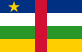
United States of Latin Africa巴罗策兰王国 以中立主义开局，不举行选举。
以中立主义开局，不举行选举。
| 政党 | 意识形态 | 支持率 | 党派领袖 | 国家名称 | 是否执政？ |
|---|---|---|---|---|---|
| Barotseland National Council (BNC) | 10% | 通用 | Federal Republic of Barotseland | No | |
| Lozi People's Party (LPP) | 5% | 通用 | People's Independent Communes of Barotseland | No | |
| Barotse Imperial Restorationists (BIR) | 5% | 通用 | Resurgent Empire of Barotseland | No | |
| Litunga Supporters | 80% | Yeta III | 巴罗策兰王国 | 是 |
| 意识形态 | 肖像 | 名称 | 党派 | 特质 | 效果 | 可用 |
|---|---|---|---|---|---|---|
Despotism |
Yeta III | the Litunga's Supporters | Litunga of the Barotse |
|
起始领袖 |
 Barotseland can form
Barotseland can form
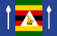
MutapaThe  比亚法拉共和国 starts as
比亚法拉共和国 starts as  民主主义 with no elections when released manually, but starts as
民主主义 with no elections when released manually, but starts as  中立主义 with the "Africa Decolonized" Custom Game Rule, also with no elections.
中立主义 with the "Africa Decolonized" Custom Game Rule, also with no elections.
| 政党 | 意识形态 | 支持率 | 党派领袖 | 国家名称 | 是否执政？ |
|---|---|---|---|---|---|
| 民主主义 | 55% | 通用 | 比亚法拉共和国 | 是 | |
| 共产主义 | 5% | 通用 | Biafran People's Republic | No | |
| 法西斯主义 | 0% | 通用 | Greater Igboland | No | |
| Oba Supporters | 40% | Akenzua II | Edo Kingdom of Benin | Yes* |
*Only with the "Africa Decolonized" Custom Game Rule enabled.
| 意识形态 | 肖像 | 名称 | 党派 | 特质 | 效果 | 可用 |
|---|---|---|---|---|---|---|
Despotism |
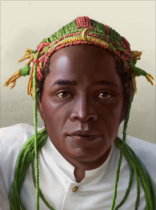 |
Akenzua II | Oba Supporters | – | – | 起始领袖 |
 博茨瓦纳 以中立主义
博茨瓦纳 以中立主义 开局，不举行选举。
开局，不举行选举。
| 政党 | 意识形态 | 支持率 | 党派领袖 | 国家名称 | 是否执政？ |
|---|---|---|---|---|---|
| 民主主义 | 0% | Tshekedi Khama | Republic of Botswana | No | |
| 共产主义 | 0% | 通用 | Union of the Batswana People | No | |
| 法西斯主义 | 0% | 通用 | Greater Botswana | No | |
| 中立主义 | 100% | 通用 | 博茨瓦纳 | 是 |
| 意识形态 | 肖像 | 名称 | 党派 | 特质 | 效果 | 可用 |
|---|---|---|---|---|---|---|
社会主义 |
Tshekedi Khama | 民主主义 | – | – | 起始领袖 |
 博茨瓦纳 can form Mutapa
博茨瓦纳 can form Mutapa
布隆迪王国 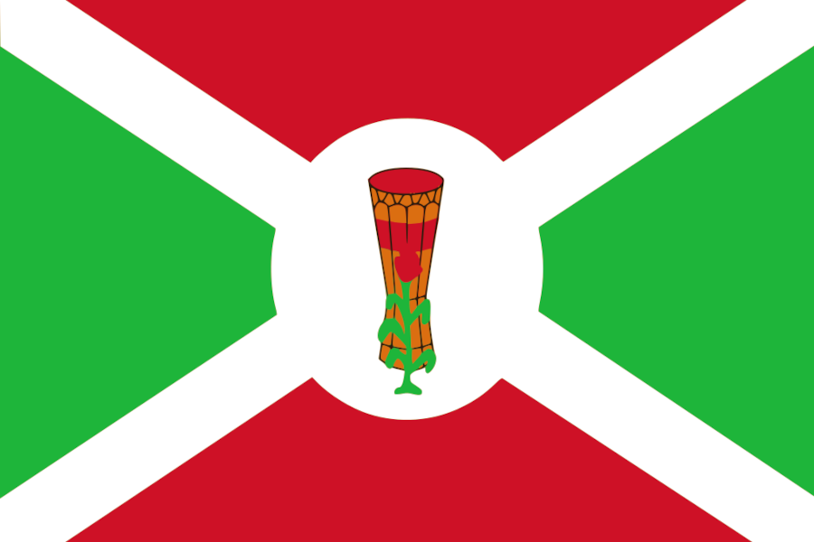
| 政党 | 意识形态 | 支持率 | 党派领袖 | 国家名称 | 是否执政？ |
|---|---|---|---|---|---|
| 民主主义 | 25% | 通用 | 布隆迪 | No | |
| 共产主义 | 5% | 通用 | Democratic People's Republic of Burundi | No | |
| 法西斯主义 | 15% | 通用 | Empire of Burundi | No | |
| 布隆迪的恩特韦罗家族 | 55% | 姆万布察四世·班吉里森格 | 布隆迪王国 | 是 |
| 意识形态 | 肖像 | 名称 | 党派 | 特质 | 效果 | 可用 |
|---|---|---|---|---|---|---|
Despotism |
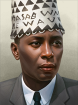 |
姆万布察四世·班吉里森格 | 布隆迪的恩特韦罗家族 | 布隆迪的姆瓦米 |
|
起始领袖 |
| 肖像 | 名称 | 特质 | 要求 | |||||
|---|---|---|---|---|---|---|---|---|
| 姆万布察四世·班吉里森格 | 2 | 2 | 2 | 1 | 2 |
|
 布隆迪 can form United States of Latin Africa和 East Africa
布隆迪 can form United States of Latin Africa和 East Africa
The  佛得角民主共和国 starts as
佛得角民主共和国 starts as  共产主义 with elections every 4 years. Next election is in March 1937.
共产主义 with elections every 4 years. Next election is in March 1937.
| 政党 | 意识形态 | 支持率 | 党派领袖 | 国家名称 | 是否执政？ |
|---|---|---|---|---|---|
| Movimento para a Democracia (MpD) | 40% | 通用 | Republic of Cabo Verde | No | |
| Partido Africano da Independência de Cabo Verde (PAICV) | 50% | 通用 | 佛得角民主共和国 | 是 | |
| 法西斯主义 | 5% | 通用 | Archipelagic Empire of Macaronesia | No | |
| 中立主义 | 5% | 通用 | Principality of Cape Verde | No |
 喀麦隆 以中立主义
喀麦隆 以中立主义 开局，不举行选举。
开局，不举行选举。
| 政党 | 意识形态 | 支持率 | 党派领袖 | 国家名称 | 是否执政？ |
|---|---|---|---|---|---|
| 民主主义 | 25% | 通用 | Republic of Cameroon | No | |
| 共产主义 | 5% | 通用 | Socialist Federation of Cameroon | No | |
| 法西斯主义 | 20% | 通用 | Nationalist Cameroon | No | |
| 中立主义 | 50% | 通用 | 喀麦隆 | 是 |
 喀麦隆 can form United States of Latin Africa
喀麦隆 can form United States of Latin Africa
中非共和国 以中立主义开局，不举行选举。
以中立主义开局，不举行选举。
| 政党 | 意识形态 | 支持率 | 党派领袖 | 国家名称 | 是否执政？ |
|---|---|---|---|---|---|
| 民主主义 | 25% | 通用 | Central African Federation | No | |
| 共产主义 | 5% | 通用 | Commune of Central Africa | No | |
| 法西斯主义 | 20% | 通用 | Central African Empire | No | |
| 中立主义 | 50% | 通用 | 中非共和国 | 是 |
 中非共和国 can form United States of Latin Africa
中非共和国 can form United States of Latin Africa
 乍得 以中立主义
乍得 以中立主义 开局，不举行选举。
开局，不举行选举。
| 政党 | 意识形态 | 支持率 | 党派领袖 | 国家名称 | 是否执政？ |
|---|---|---|---|---|---|
| 民主主义 | 25% | 通用 | Republic of Chad | No | |
| 共产主义 | 5% | 通用 | Democratic People's Republic of Chad | No | |
| 法西斯主义 | 20% | 通用 | Pan-Sahelian Empire | No | |
| 中立主义 | 50% | 通用 | 乍得 | 是 |
 乍得 can form United States of Latin Africa
乍得 can form United States of Latin Africa
 刚果（布） 以中立主义
刚果（布） 以中立主义 开局，不举行选举。
开局，不举行选举。
| 政党 | 意识形态 | 支持率 | 党派领袖 | 国家名称 | 是否执政？ |
|---|---|---|---|---|---|
| 民主主义 | 25% | 通用 | Republic of the Congo | No | |
| 共产主义 | 5% | 通用 | Democratic Republic of the West Congo | No | |
| 法西斯主义 | 20% | 通用 | The Congo | No | |
| 中立主义 | 50% | 通用 | 刚果（布） | 是 |
 刚果 can form United States of Latin Africa
刚果 can form United States of Latin Africa
With  诸神黄昏, the
诸神黄昏, the  刚果国 is replaced by
刚果国 is replaced by  比属刚果, which exists at game start.
比属刚果, which exists at game start.
Without  诸神黄昏, the
诸神黄昏, the  刚果国 starts as
刚果国 starts as  中立主义 with no elections.
中立主义 with no elections.
| 政党 | 意识形态 | 支持率 | 党派领袖 | 国家名称 | 是否执政？ |
|---|---|---|---|---|---|
| 巴刚果联盟（ABAKO） | 20% | 通用 | Congo-Léopoldville | No | |
| Front de Libération Nationale Congolaise (FLNC) | 0% | 通用 | 刚果民主共和国 | No | |
| Mouvement Populaire de la Révolution (MPR) | 0% | 通用 | 扎伊尔 | No | |
| Gouvernorat Général du Congo | 80% | 通用 | 刚果国 | 是 |
 科特迪瓦 以中立主义
科特迪瓦 以中立主义 开局，不举行选举。
开局，不举行选举。
| 政党 | 意识形态 | 支持率 | 党派领袖 | 国家名称 | 是否执政？ |
|---|---|---|---|---|---|
| 民主主义 | 25% | 通用 | République de Côte d'Ivoire | No | |
| 共产主义 | 5% | 通用 | Ivory Commune | No | |
| 法西斯主义 | 20% | 通用 | Presidential Dictatorship of Côte d'Ivoire | No | |
| 中立主义 | 50% | 通用 | Côte d'Ivoire | 是 |
 达荷美 以中立主义
达荷美 以中立主义 开局，不举行选举。
开局，不举行选举。
| 政党 | 意识形态 | 支持率 | 党派领袖 | 国家名称 | 是否执政？ |
|---|---|---|---|---|---|
| 民主主义 | 25% | 通用 | Benin | No | |
| 共产主义 | 5% | 通用 | Socialist Republic of Dahomey | No | |
| 法西斯主义 | 20% | 通用 | Benin Unitary Federation | No | |
| 中立主义 | 50% | 通用 | 达荷美 | 是 |
 吉布提 以中立主义
吉布提 以中立主义 开局，不举行选举。
开局，不举行选举。
| 政党 | 意识形态 | 支持率 | 党派领袖 | 国家名称 | 是否执政？ |
|---|---|---|---|---|---|
| 民主主义 | 25% | 通用 | Republic of Djibouti | No | |
| 共产主义 | 5% | 通用 | Djiboutian Socialist Republic | No | |
| 法西斯主义 | 20% | 通用 | Empire of Adal | No | |
| 中立主义 | 50% | 通用 | 吉布提 | 是 |
 吉布提 can form
吉布提 can form
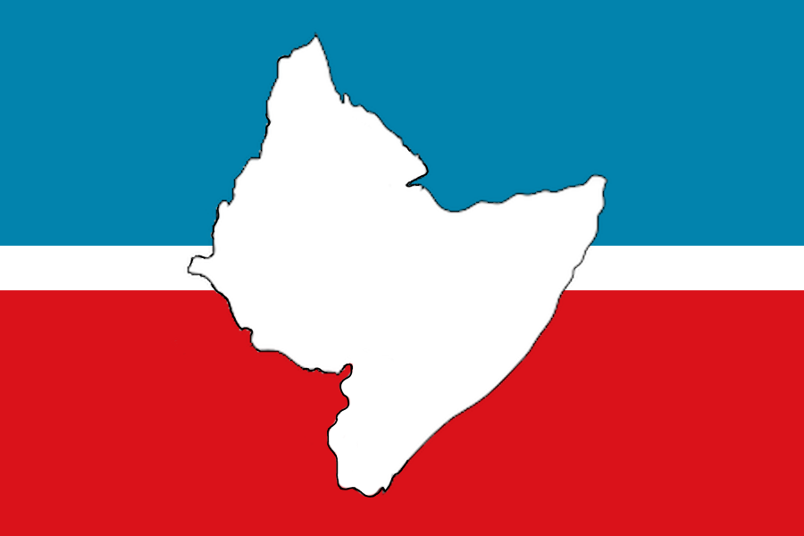
Horn of Africa埃及王国 以中立主义开局，不举行选举。
以中立主义开局，不举行选举。
| 政党 | 意识形态 | 支持率 | 党派领袖 | 国家名称 | 是否执政？ |
|---|---|---|---|---|---|
| Liberation Rally | 25% | Muhammad Naguib | 埃及 | No | |
| Egyptian Communist Party | 5% | Hosni al-Arabi | Soviet Republic of the Nile | No | |
| Misr El-Fatah | 20% | Ahmed Husayn | Imperial Kemet | No | |
| Royalists | 50% | Farouk Muhammad Ali | 埃及王国 | 是 |
| 意识形态 | 肖像 | 名称 | 党派 | 特质 | 效果 | 可用 |
|---|---|---|---|---|---|---|
自由主义 |
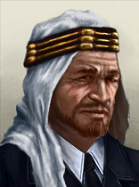 |
Muhammad Naguib | Liberation Rally | – | – | 起始领袖 |
列宁主义 |
Hosni al-Arabi | Egyptian Communist Party | – | – | 起始领袖 | |
法西斯主义 |
Ahmed Husayn | Misr El-Fatah | – | – | 起始领袖 | |
Despotism |
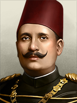 |
Farouk Muhammad Ali | Royalists | – | – | 起始领袖 |
 埃及 can form Arabia和 Mesopotamia.
埃及 can form Arabia和 Mesopotamia.
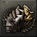 Freegypt 作为埃及，利用自治度系统从一个傀儡国变成一个自由国家。 |
 赤道几内亚 以中立主义
赤道几内亚 以中立主义 开局，不举行选举。
开局，不举行选举。
| 政党 | 意识形态 | 支持率 | 党派领袖 | 国家名称 | 是否执政？ |
|---|---|---|---|---|---|
| 民主主义 | 25% | 通用 | Republic of Equatorial Guinea | No | |
| 共产主义 | 5% | 通用 | Equatorial Commune of Guinea | No | |
| 法西斯主义 | 20% | 通用 | Equatorial Empire of Guinea | No | |
| 中立主义 | 50% | 通用 | 赤道几内亚 | 是 |
 赤道几内亚 can form United States of Latin Africa
赤道几内亚 can form United States of Latin Africa
 厄立特里亚 以民主主义
厄立特里亚 以民主主义 开局，每 4 年举行一次选举。下一次选举在 1940 年 1 月。
开局，每 4 年举行一次选举。下一次选举在 1940 年 1 月。
| 政党 | 意识形态 | 支持率 | 党派领袖 | 国家名称 | 是否执政？ |
|---|---|---|---|---|---|
| 民主主义 | 55% | 通用 | 厄立特里亚 | 是 | |
| 共产主义 | 5% | 通用 | Eritrean Democratic People's Republic | No | |
| 法西斯主义 | 15% | 通用 | Unitary Eritrea | No | |
| 中立主义 | 25% | 通用 | Eritrean Kingdom | No |
 厄立特里亚 can form Horn of Africa
厄立特里亚 can form Horn of Africa
 加蓬 以中立主义
加蓬 以中立主义 开局，不举行选举。
开局，不举行选举。
| 政党 | 意识形态 | 支持率 | 党派领袖 | 国家名称 | 是否执政？ |
|---|---|---|---|---|---|
| 民主主义 | 25% | 通用 | Gabonese Republic | No | |
| 共产主义 | 5% | 通用 | Gabonese Commune | No | |
| 法西斯主义 | 20% | 通用 | Sovereign Gabonese State | No | |
| 中立主义 | 50% | 通用 | 加蓬 | 是 |
 加蓬 can form United States of Latin Africa
加蓬 can form United States of Latin Africa
 加纳 starts as
加纳 starts as  中立主义 with no elections when released manually, but starts as
中立主义 with no elections when released manually, but starts as  民主主义 with the "Africa Decolonized" Custom Game Rule, with elections every 4 years, the next being in January 1940.
民主主义 with the "Africa Decolonized" Custom Game Rule, with elections every 4 years, the next being in January 1940.
| 政党 | 意识形态 | 支持率 | 党派领袖 | 国家名称 | 是否执政？ |
|---|---|---|---|---|---|
| 民主主义 | 25% | 弗朗西斯·夸梅·恩克鲁玛 | Republic of Ghana | 是 | |
| 共产主义 | 5% | 通用 | Socialist State of Ghana | No | |
| 法西斯主义 | 20% | 通用 | Ghana Empire | No | |
| 中立主义 | 50% | 通用 | 加纳 | Yes* |
*Only with the "Africa Decolonized" Custom Game Rule enabled.
| 意识形态 | 肖像 | 名称 | 党派 | 特质 | 效果 | 可用 |
|---|---|---|---|---|---|---|
社会主义 |
弗朗西斯·夸梅·恩克鲁玛 | 民主主义 | Pan-Africanist Socialist |
|
起始领袖 |
 几内亚 以中立主义
几内亚 以中立主义 开局，不举行选举。
开局，不举行选举。
| 政党 | 意识形态 | 支持率 | 党派领袖 | 国家名称 | 是否执政？ |
|---|---|---|---|---|---|
| 民主主义 | 25% | 通用 | Republic of Guinea | No | |
| 共产主义 | 5% | 通用 | Socialist Republic of Guinea-Conakry | No | |
| 法西斯主义 | 20% | 通用 | Sovereign State of Guinea | No | |
| 中立主义 | 50% | 通用 | 几内亚 | 是 |
 几内亚比绍 以共产主义
几内亚比绍 以共产主义 开局，不举行选举。
开局，不举行选举。
| 政党 | 意识形态 | 支持率 | 党派领袖 | 国家名称 | 是否执政？ |
|---|---|---|---|---|---|
| 民主主义 | 25% | 通用 | Republic of Guinea-Bissau | No | |
| 共产主义 | 50% | 通用 | 几内亚比绍 | 是 | |
| 法西斯主义 | 20% | 通用 | Dictatorial Guinea-Bissau | No | |
| 中立主义 | 5% | 通用 | Constitutional State of Guinea-Bissau | No |
加丹加国 以中立主义开局，不举行选举。
以中立主义开局，不举行选举。
| 政党 | 意识形态 | 支持率 | 党派领袖 | 国家名称 | 是否执政？ |
|---|---|---|---|---|---|
| Convention Nationale Katangais | 20% | 通用 | Republic of Katanga | No | |
| Front de Libération Nationale Katangais (FLNK) | 15% | 通用 | Katangese People's Republic | No | |
| Associations Tribales du Katanga (ATK) | 5% | 通用 | Katanga Free State | No | |
| Confédération des Associations Tribales du Katanga (CONAKAT) | 60% | Moïse Kapenda Tshombé | 加丹加国 | 是 |
| 意识形态 | 肖像 | 名称 | 党派 | 特质 | 效果 | 可用 |
|---|---|---|---|---|---|---|
中间主义 |
Moïse Kapenda Tshombé | Confédération des Associations Tribales du Katanga | – | – | 起始领袖 |
 Katanga can form United States of Latin Africa
Katanga can form United States of Latin Africa
 肯尼亚 以中立主义
肯尼亚 以中立主义 开局，不举行选举。
开局，不举行选举。
| 政党 | 意识形态 | 支持率 | 党派领袖 | 国家名称 | 是否执政？ |
|---|---|---|---|---|---|
| 民主主义 | 0% | 通用 | Republic of Kenya | No | |
| 共产主义 | 0% | 通用 | People's Republic of Kenya | No | |
| 法西斯主义 | 0% | 通用 | Greater Kenyan Empire | No | |
| 中立主义 | 100% | Dedan Ngwale | 肯尼亚 | 是 |
| 意识形态 | 肖像 | 名称 | 党派 | 特质 | 效果 | 可用 |
|---|---|---|---|---|---|---|
中间主义 |
Dedan Ngwale | 中立主义 | – | – | 起始领袖 |
 肯尼亚 can form East Africa
肯尼亚 can form East Africa
利比亚王国 以中立主义开局，不举行选举。
以中立主义开局，不举行选举。
| 政党 | 意识形态 | 支持率 | 党派领袖 | 国家名称 | 是否执政？ |
|---|---|---|---|---|---|
| 民主主义 | 25% | Bashir es Sadawi | Libyan Electorate | No | |
| 共产主义 | 5% | Hassan as-Senussi | Libyan Socialist Republic | No | |
| 法西斯主义 | 20% | Ettore Bastico | Africa Nova | No | |
| Senussi Order | 50% | Idris Senussi | 利比亚王国 | 是 |
| 意识形态 | 肖像 | 名称 | 党派 | 特质 | 效果 | 可用 |
|---|---|---|---|---|---|---|
自由主义 |
Bashir es Sadawi | 民主主义 | – | – | 起始领袖 | |
列宁主义 |
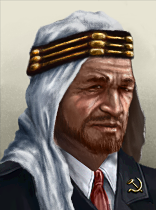 |
Hassan as-Senussi | 共产主义 | – | – | 起始领袖 |
法西斯主义 |
Ettore Bastico | 法西斯主义 | – | – | 起始领袖 | |
Despotism |
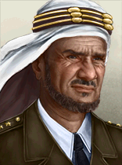 |
Idris Senussi | Senussi Order | – | – | 起始领袖 |
 Libya can form
Libya can form  安达卢斯, Arabia和 Maghreb
安达卢斯, Arabia和 Maghreb
马达加斯加共和国 开局时为中立主义，每 4 年举行一次选举。下一次选举在 1940 年 1 月。
开局时为中立主义，每 4 年举行一次选举。下一次选举在 1940 年 1 月。
| 政党 | 意识形态 | 支持率 | 党派领袖 | 国家名称 | 是否执政？ |
|---|---|---|---|---|---|
| 民主主义 | 27% | 通用 | 马达加斯加 | No | |
| 共产主义 | 15% | 通用 | Malagasy People's Republic | No | |
| 法西斯主义 | 8% | 通用 | Empire of Imerina | No | |
| 中立主义 | 50% | 通用 | 马达加斯加共和国 | 是 |
 马拉维 以中立主义
马拉维 以中立主义 开局，不举行选举。
开局，不举行选举。
| 政党 | 意识形态 | 支持率 | 党派领袖 | 国家名称 | 是否执政？ |
|---|---|---|---|---|---|
| 民主主义 | 25% | 通用 | Republic of Malawi | No | |
| 共产主义 | 5% | 通用 | Communist Malawi | No | |
| 法西斯主义 | 20% | 通用 | Empire of Malawi | No | |
| 中立主义 | 50% | 通用 | 马拉维 | 是 |
 马里 以中立主义
马里 以中立主义 开局，不举行选举。
开局，不举行选举。
| 政党 | 意识形态 | 支持率 | 党派领袖 | 国家名称 | 是否执政？ |
|---|---|---|---|---|---|
| 民主主义 | 25% | 通用 | Republic of Mali | No | |
| 共产主义 | 5% | 通用 | Malian Socialist Worker State | No | |
| 法西斯主义 | 20% | 通用 | Resurgent Mali Empire | No | |
| 中立主义 | 50% | 通用 | 马里 | 是 |
 毛里塔尼亚 以中立主义
毛里塔尼亚 以中立主义 开局，不举行选举。
开局，不举行选举。
| 政党 | 意识形态 | 支持率 | 党派领袖 | 国家名称 | 是否执政？ |
|---|---|---|---|---|---|
| 民主主义 | 25% | 通用 | Republic of Mauritania | No | |
| 共产主义 | 5% | 通用 | Revolutionary Mauritania | No | |
| 法西斯主义 | 20% | 通用 | Caliphate of Mauritania | No | |
| 中立主义 | 50% | 通用 | 毛里塔尼亚 | 是 |
 毛里塔尼亚 can form Arabia和 Maghreb
毛里塔尼亚 can form Arabia和 Maghreb
摩洛哥王国 以中立主义开局，不举行选举。
以中立主义开局，不举行选举。
| 政党 | 意识形态 | 支持率 | 党派领袖 | 国家名称 | 是否执政？ |
|---|---|---|---|---|---|
| 民主主义 | 25% | 通用 | Morocco | No | |
| 共产主义 | 5% | 通用 | Moroccan People's Republic | No | |
| 法西斯主义 | 20% | 通用 | Maghreb Empire | No | |
| 中立主义 | 50% | Mohammed V | 摩洛哥王国 | 是 |
| 意识形态 | 肖像 | 名称 | 党派 | 特质 | 效果 | 可用 |
|---|---|---|---|---|---|---|
Despotism |
Mohammed V | 中立主义 | – | – | 起始领袖 |
 Morocco can form
Morocco can form  安达卢斯, Arabia和 Maghreb
安达卢斯, Arabia和 Maghreb
 莫桑比克 以中立主义
莫桑比克 以中立主义 开局，不举行选举。
开局，不举行选举。
| 政党 | 意识形态 | 支持率 | 党派领袖 | 国家名称 | 是否执政？ |
|---|---|---|---|---|---|
| 民主主义 | 0% | 通用 | Republic of Mozambique | No | |
| 共产主义 | 0% | 通用 | People's Republic of Mozambique | No | |
| 法西斯主义 | 0% | 通用 | Great Mozambique | No | |
| 中立主义 | 100% | Eduardo Tsonga | 莫桑比克 | 是 |
| 意识形态 | 肖像 | 名称 | 党派 | 特质 | 效果 | 可用 |
|---|---|---|---|---|---|---|
Despotism |
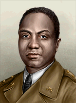 |
Eduardo Tsonga | 中立主义 | – | – | 起始领袖 |
 莫桑比克 can form Mutapa
莫桑比克 can form Mutapa
 纳米比亚 以民主主义
纳米比亚 以民主主义 开局，每 4 年举行一次选举。下一次选举在 1940 年 1 月。
开局，每 4 年举行一次选举。下一次选举在 1940 年 1 月。
| 政党 | 意识形态 | 支持率 | 党派领袖 | 国家名称 | 是否执政？ |
|---|---|---|---|---|---|
| 民主主义 | 50% | 通用 | 纳米比亚 | 是 | |
| 共产主义 | 5% | 通用 | Democratic People's Republic of Namibia | No | |
| 法西斯主义 | 20% | 通用 | Namib Empire | No | |
| 中立主义 | 25% | 通用 | State of South West Africa | No |
 尼日尔 以中立主义
尼日尔 以中立主义 开局，不举行选举。
开局，不举行选举。
| 政党 | 意识形态 | 支持率 | 党派领袖 | 国家名称 | 是否执政？ |
|---|---|---|---|---|---|
| 民主主义 | 25% | 通用 | Republic of the Niger | No | |
| 共产主义 | 5% | 通用 | Nigerien People's Republic | No | |
| 法西斯主义 | 20% | 通用 | The Niger Ascendancy | No | |
| 中立主义 | 50% | 通用 | 尼日尔 | 是 |
 尼日利亚 以中立主义
尼日利亚 以中立主义 开局，不举行选举。
开局，不举行选举。
| 政党 | 意识形态 | 支持率 | 党派领袖 | 国家名称 | 是否执政？ |
|---|---|---|---|---|---|
| 民主主义 | 25% | 通用 | Republic of Nigeria | No | |
| 共产主义 | 5% | 通用 | Socialist Nigerian Federation | No | |
| 法西斯主义 | 20% | 通用 | Nigerian Military State | No | |
| 中立主义 | 50% | 通用 | 尼日利亚 | 是 |
 卢旺达 以中立主义
卢旺达 以中立主义 开局，不举行选举。
开局，不举行选举。
| 政党 | 意识形态 | 支持率 | 党派领袖 | 国家名称 | 是否执政？ |
|---|---|---|---|---|---|
| 民主主义 | 25% | 通用 | Republic of Rwanda | No | |
| 共产主义 | 5% | 通用 | Rwanda Commune | No | |
| 法西斯主义 | 20% | 通用 | Rwanda Empire | No | |
| 卢旺达的阿巴尼伊吉尼亚氏族 | 50% | 穆塔拉三世·鲁达希格瓦 | 卢旺达 | 是 |
| 意识形态 | 肖像 | 名称 | 党派 | 特质 | 效果 | 可用 |
|---|---|---|---|---|---|---|
Despotism |
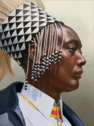 |
穆塔拉三世·鲁达希格瓦 | 卢旺达的阿巴尼伊吉尼亚氏族 | 卢旺达的乌姆瓦米 |
|
起始领袖 |
| 肖像 | 名称 | 特质 | 要求 | |||||
|---|---|---|---|---|---|---|---|---|
| 穆塔拉三世·鲁达希格瓦 | 3 | 4 | 2 | 2 | 2 |
|
 卢旺达 can form United States of Latin Africa和 East Africa
卢旺达 can form United States of Latin Africa和 East Africa
阿拉伯撒哈拉民主共和国 以中立主义开局，不举行选举。
以中立主义开局，不举行选举。
| 政党 | 意识形态 | 支持率 | 党派领袖 | 国家名称 | 是否执政？ |
|---|---|---|---|---|---|
| 民主主义 | 25% | 通用 | Sahrawi Republic | No | |
| 共产主义 | 5% | 通用 | Commune of the Western Sahara | No | |
| 法西斯主义 | 20% | 通用 | Empire of the Desert | No | |
| 中立主义 | 50% | El-Ouali Mustapha Sayed | 阿拉伯撒哈拉民主共和国 | 是 |
| 意识形态 | 肖像 | 名称 | 党派 | 特质 | 效果 | 可用 |
|---|---|---|---|---|---|---|
中间主义 |
El-Ouali Mustapha Sayed | 中立主义 | – | – | 起始领袖 |
 西撒哈拉 can form
西撒哈拉 can form  安达卢斯, Arabia和 Maghreb
安达卢斯, Arabia和 Maghreb
 塞内加尔 以民主主义
塞内加尔 以民主主义 开局，每 4 年举行一次选举。下一次选举在 1940 年 1 月。
开局，每 4 年举行一次选举。下一次选举在 1940 年 1 月。
| 政党 | 意识形态 | 支持率 | 党派领袖 | 国家名称 | 是否执政？ |
|---|---|---|---|---|---|
| 民主主义 | 55% | 通用 | 塞内加尔 | 是 | |
| 共产主义 | 5% | 通用 | Democratic People's Republic of Senegal | No | |
| 法西斯主义 | 15% | 通用 | Senegal Dictatorial State | No | |
| 中立主义 | 25% | 通用 | State of Jolof | No |
塞拉利昂 以民主主义 开局，每 4 年举行一次选举。下一次选举在 1940 年 1 月。
开局，每 4 年举行一次选举。下一次选举在 1940 年 1 月。
| 政党 | 意识形态 | 支持率 | 党派领袖 | 国家名称 | 是否执政？ |
|---|---|---|---|---|---|
| 民主主义 | 55% | 通用 | 塞拉利昂 | 是 | |
| 共产主义 | 5% | 通用 | Democratic People's Republic of Sierra Leone | No | |
| 法西斯主义 | 15% | 通用 | Sierra Leone Junta | No | |
| 中立主义 | 25% | 通用 | Kingdom of Sierra Leone | No |
索科托哈里发国 以中立主义开局，不举行选举。
以中立主义开局，不举行选举。
| 政党 | 意识形态 | 支持率 | 党派领袖 | 国家名称 | 是否执政？ |
|---|---|---|---|---|---|
| Hausa-Fulani United People's Party (HFUPP) | 10% | 通用 | Hausa-Fulani Republic of Sokoto | No | |
| The Sokoto National Liberation Front (SNLF) | 5% | 通用 | Islamic Socialist Republic of Sokoto | No | |
| The All-Sokoto Forward Bloc (ASFB) | 10% | 通用 | Sublime Sultanate of Sokoto | No | |
| Caliphate Supporters | 75% | Siddiq Abubakar III | 索科托哈里发国 | 是 |
| 意识形态 | 肖像 | 名称 | 党派 | 特质 | 效果 | 可用 |
|---|---|---|---|---|---|---|
Despotism |
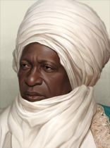 |
Siddiq Abubakar III | Caliphate Supporters | Sultan of Sokoto |
|
起始领袖 |
索马里苏丹国 以中立主义开局，不举行选举。
以中立主义开局，不举行选举。
| 政党 | 意识形态 | 支持率 | 党派领袖 | 国家名称 | 是否执政？ |
|---|---|---|---|---|---|
| 民主主义 | 25% | 通用 | Somalia | No | |
| 共产主义 | 5% | 通用 | Somali Democratic Republic | No | |
| 法西斯主义 | 20% | 通用 | Ajuraan Empire | No | |
| 中立主义 | 50% | 通用 | 索马里苏丹国 | 是 |
 Somalia can form Horn of Africa
Somalia can form Horn of Africa
 苏丹 以中立主义
苏丹 以中立主义 开局，不举行选举。
开局，不举行选举。
| 政党 | 意识形态 | 支持率 | 党派领袖 | 国家名称 | 是否执政？ |
|---|---|---|---|---|---|
| 民主主义 | 25% | 通用 | Republic of the Sudan | No | |
| 共产主义 | 5% | 通用 | Commune of the Sudan | No | |
| 法西斯主义 | 20% | 通用 | Nubia | No | |
| 中立主义 | 50% | 通用 | 苏丹 | 是 |
 苏丹 can form Arabia
苏丹 can form Arabia
 坦桑尼亚 以中立主义
坦桑尼亚 以中立主义 开局，不举行选举。
开局，不举行选举。
| 政党 | 意识形态 | 支持率 | 党派领袖 | 国家名称 | 是否执政？ |
|---|---|---|---|---|---|
| 民主主义 | 25% | 通用 | Republic of Tanzania | No | |
| 共产主义 | 5% | 通用 | Tanzanian Socialist Union | No | |
| 法西斯主义 | 20% | 通用 | Nationalist Tanzanian State | No | |
| 中立主义 | 50% | 通用 | 坦桑尼亚 | 是 |
 坦桑尼亚 can form East Africa
坦桑尼亚 can form East Africa
 冈比亚 以民主主义
冈比亚 以民主主义 开局，每 4 年举行一次选举。下一次选举在 1940 年 1 月。
开局，每 4 年举行一次选举。下一次选举在 1940 年 1 月。
| 政党 | 意识形态 | 支持率 | 党派领袖 | 国家名称 | 是否执政？ |
|---|---|---|---|---|---|
| 民主主义 | 55% | 通用 | 冈比亚 | 是 | |
| 共产主义 | 5% | 通用 | United Worker State of The Gambia | No | |
| 法西斯主义 | 15% | 通用 | Nationalist The Gambia | No | |
| 中立主义 | 25% | 通用 | Islamic Republic of The Gambia | No |
里夫共和国 以中立主义开局，不举行选举。
以中立主义开局，不举行选举。
| 政党 | 意识形态 | 支持率 | 党派领袖 | 国家名称 | 是否执政？ |
|---|---|---|---|---|---|
| 民主主义 | 20% | 通用 | 里夫共和国 | No | |
| 共产主义 | 20% | 通用 | People's Republic of the Rif | No | |
| 法西斯主义 | 10% | 通用 | Empire of the Rif | No | |
| 中立主义 | 50% | Abd el-Krim | 里夫共和国 | 是 |
| 意识形态 | 肖像 | 名称 | 党派 | 特质 | 效果 | 可用 |
|---|---|---|---|---|---|---|
Despotism |
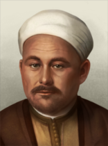 |
Abd el-Krim | 中立主义 | Freedom Fighter |
|
起始领袖 |
 里夫 can form
里夫 can form  安达卢斯, Arabia和 Maghreb
安达卢斯, Arabia和 Maghreb
 多哥 以中立主义
多哥 以中立主义 开局，不举行选举。
开局，不举行选举。
| 政党 | 意识形态 | 支持率 | 党派领袖 | 国家名称 | 是否执政？ |
|---|---|---|---|---|---|
| 民主主义 | 25% | 通用 | Togolese Republic | No | |
| 共产主义 | 5% | 通用 | Togolese Commune | No | |
| 法西斯主义 | 20% | 通用 | Nationalist Togo | No | |
| 中立主义 | 50% | 通用 | 多哥 | 是 |
 突尼斯 以中立主义
突尼斯 以中立主义 开局，不举行选举。
开局，不举行选举。
| 政党 | 意识形态 | 支持率 | 党派领袖 | 国家名称 | 是否执政？ |
|---|---|---|---|---|---|
| 民主主义 | 25% | 通用 | Republic of Tunisia | No | |
| 共产主义 | 5% | 通用 | Communist State of Tunisia | No | |
| 法西斯主义 | 20% | 通用 | Barbary Tunis | No | |
| 中立主义 | 50% | Habib Bourguiba | 突尼斯 | 是 |
| 意识形态 | 肖像 | 名称 | 党派 | 特质 | 效果 | 可用 |
|---|---|---|---|---|---|---|
中间主义 |
Habib Bourguiba | 中立主义 | – | – | 起始领袖 |
 突尼斯 can form
突尼斯 can form  安达卢斯, Arabia和 Maghreb
安达卢斯, Arabia和 Maghreb
 乌干达 以民主主义
乌干达 以民主主义 开局，每 4 年举行一次选举。下一次选举在 1940 年 1 月。
开局，每 4 年举行一次选举。下一次选举在 1940 年 1 月。
| 政党 | 意识形态 | 支持率 | 党派领袖 | 国家名称 | 是否执政？ |
|---|---|---|---|---|---|
| 民主主义 | 55% | 通用 | 乌干达 | 是 | |
| 共产主义 | 5% | 通用 | Ugandan People's Republic | No | |
| 法西斯主义 | 15% | 通用 | Nationalist Uganda | No | |
| 中立主义 | 25% | 通用 | Kingdom of Buganda | No |
 乌干达 can form East Africa
乌干达 can form East Africa
 上沃尔特 以中立主义
上沃尔特 以中立主义 开局，不举行选举。
开局，不举行选举。
| 政党 | 意识形态 | 支持率 | 党派领袖 | 国家名称 | 是否执政？ |
|---|---|---|---|---|---|
| 民主主义 | 25% | 通用 | Burkina Faso | No | |
| 共产主义 | 5% | 通用 | Upper Volta Socialist Republic | No | |
| 法西斯主义 | 20% | 通用 | Authority of Upper Volta | No | |
| 中立主义 | 50% | 通用 | 上沃尔特 | 是 |
 赞比亚 以民主主义
赞比亚 以民主主义 开局，每 4 年举行一次选举。下一次选举在 1940 年 1 月。
开局，每 4 年举行一次选举。下一次选举在 1940 年 1 月。
| 政党 | 意识形态 | 支持率 | 党派领袖 | 国家名称 | 是否执政？ |
|---|---|---|---|---|---|
| 民主主义 | 55% | 通用 | 赞比亚 | 是 | |
| 共产主义 | 5% | 通用 | Zambian People's Republic | No | |
| 法西斯主义 | 15% | 通用 | State of Zambia | No | |
| 中立主义 | 25% | 通用 | Kingdom of Zambia | No |
 赞比亚 can form Mutapa
赞比亚 can form Mutapa
 津巴布韦 以中立主义
津巴布韦 以中立主义 开局，不举行选举。
开局，不举行选举。
| 政党 | 意识形态 | 支持率 | 党派领袖 | 国家名称 | 是否执政？ |
|---|---|---|---|---|---|
| 民主主义 | 0% | 通用 | Republic of Zimbabwe | No | |
| 共产主义 | 0% | 通用 | Zimbabwean Democratic Republic | No | |
| 法西斯主义 | 0% | Marcus James Hugins | Rhodesia | No | |
| 中立主义 | 100% | 通用 | 津巴布韦 | 是 |
| 意识形态 | 肖像 | 名称 | 党派 | 特质 | 效果 | 可用 |
|---|---|---|---|---|---|---|
纳粹主义 |

|
Marcus James Hugins | 法西斯主义 | 恐怖亲王 |
|
起始领袖 |
 津巴布韦 can form Mutapa
津巴布韦 can form Mutapa
| 非洲 |
| 非洲 |
|
| 非洲之角国家 |
|